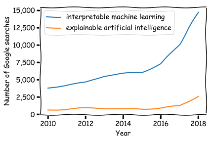

Understanding the SHAP interpretation method: Shapley values
Posted on Fri 27 December 2019 in posts
Explainable artificial intelligence (XAI, a.k.a interpretable machine learning) is a thing those days. The goal of XAI is to provide explanations for machine learning models predictions, such that humans can understand the reasons that lead to those predictions.

It is important to know the reasons behind an algorithm's predictions in a variety of contexts:
- 🤔 when you have to explain to a bank customer why his loan was refused by an algorithm,
- 👨🔬 when you use your machine learning model as an advisor for critical decisions (e.g. in medicine),
- 👩💼 when law requires you to be able to explain your model's predictions (like GDPR's "right to explanation"),
- 💻 or when you want to check that your model has learned sound patterns and thus won't overfit the very day you'll release it in production.
While some machine learning models are easily interpretable by nature, like the simple decision tree, the best perfoming ones are usually harder to fathom for a human being. Indeed, the winning solutions on the leading machine learning competitions website Kaggle always involve ensemble (e.g. gradient boosting model, random forest, ...) and deep learning models. Those two families of models produce predictions that are hard to interpret for humans. More generally, in most machine learning modelling situations there is a tradeoff between interpretability and performance.
A method named SHAP has made a lot of noise since its publication in 2017. At the time LIME was the rockstar of model interpretation methods. While the LIME original paper is fairly easy to understand and well presented by some blog articles, I haven't found a "SHAP for dummies" blog article with toy examples that explains this complex research paper simply. Thus I've rolled up my sleeves, studied the article, and I'll try to share the essence of it with simple explanations in this article.
Why do we need another interpretation method?¶
Let's use a motivating example for the remainder of this article. Imagine you own a motorbike rental shop and try to understand the influence of advertising on your number of daily rentals. Your goal is to pay for ads only when it has an important leverage. You carefully keep track of the target variable (number of rentals) and three binary predictors: whether you paid to display your ad, if it was a weekday, and whether it was raining this day or not. Here is the dataset you've collected after a while:
| Rentals | Ad? | Weekday? | Rain? |
|---|---|---|---|
| 10 | 1 | 1 | 1 |
| 8 | 0 | 1 | 0 |
| 20 | 1 | 0 | 0 |
| 12 | 0 | 1 | 0 |
| ... | ... | ... | ... |
You've trained a fairly accurate machine learning model that predicts the number of rentals based on your three variables.
How to know how effective was the ad on a specific day?
Naive approach (and why it is bad)¶
If you want to understand the impact of adverstisement for your first example, you may simply compare the number of rentals predicted by your model with and without advertisement, i.e. compute the importance $\phi_a$ of the advertisement variable $a$ using the following formula:
$$ \phi_a = f \left(x_a=1, x_w=1, x_r=1\right) - f \left(x_a=0, x_w=1, x_r=1\right), $$where $f$ is your machine learning model, and $x_a$, $x_w$, and $x_r$ are the "Ad?", "Weekday?", and "Rain?" variables respectively.
There are several problems with this approach:
- Unrealistic datapoint: The virtual datapoint that we use to compare our prediction $\left(x_a=0, x_w=1, x_r=1\right)$ might not be realistic regarding the data generation process. In that case the model knows nothing about those datapoints and the prediction can be completely random. Note that SHAP - and most approaches in interpretable ML - do not completely solve this problem.
- No importance distribution between correlated variables: This naive approach is bad at distributing importance among features when there are correlations. For instance if we add a "Schoolday" variable that is perfectly correlated with weekday (if we ignore holidays), the machine learning model might use only one of those two variable for its prediction. Still, we want to distribute the importance equally between those two correlated features!
- Not theoretically grounded: There are several more desirable properties of explanation methods that are broken by this approach, as we'll see in the rest of this article.
If you know about ML interpretation you might want to use LIME, but the SHAP articles shows that the LIME method also breaks two interpretation methods desirable properties: consistency and local accuracy.
A natural and general explanation framework: feature attribution¶
SHAP, LIME, and many others belong to the family of local interpretation methods. Those methods approximate a complex ML model $f$ with a simpler one $g$ that produces similar results around the data points for which we want to explain the model prediction.
Local explanation methods also introduce the concept of simplified inputs (denoted with a prime) that ease interpretation: typically, simplified inputs are binary variables corresponding to the presence of features, words or pixels. Those simplified inputs can be (locally) mapped back to original inputs through a mapping function $h_x$. An example might help here: consider a sentiment analysis model that only predicts a 50 % probability for the sentence "I am happy" to correspond to positive sentiment. You have to understand why the probability is not larger.
Your input feature $x$ might be a complex embedding of the sentence (e.g. $x=(0.523, 8.35, ...)$), but you can define a simplified input $x'$ such that $x'=(1, 1, 1)$ corresponds to the presence of the three words "I", "am" and "happy". The mapping function $h_x$ can be any function that would map $x'=(1, 1, 1)$ to $x=(0.523, 8.35, ...)$.
Local interpretation methods generate local surrogate models $g$ that are locally similar to the original model, i.e. such that $g(z')\simeq f\left(h_x(z')\right)$ close to the datapoint being investigated.
From the interpretable model $g$, feature attribution consists in distributing the prediction outcome between the different variables: $$ g(z') = \phi_0 + \sum_{i=0}^M \phi_i z_i' $$ where $z_i \in \{0, 1\}$.
Going back to our "I am happy" example, $\phi_0$ would be the prediction in the complete absence of words, $\phi_0+\phi_1$ would be the local model prediction $g(1,0,0)$ for a virtual example with only the word "I", etc.
Now a question remains: what properties should we expect from feature attribution methods, and what method satisfies them?
Shapley values: the most elegant and accurate feature attribution method¶
The theoretical elegance of the SHAP article comes from the fact that they have listed the desirable properties of additive feature attribution methods:
🎯 Local accuracy: the explanation model $g$ must give the same prediction has the original model for the untransformed input. This property implies that the weight $\phi_i$ sum to the original model prediction $f(x)$, i.e. $\sum_i \phi_i = f(x)$.
🤷♂️Missingness: if a feature is missing the associated weight is 0. This property might seem odd at first. It is only relevant for a dataset with constant features, for which we want the constant feature to have no weight.
🦉Consistency: if the effect of adding a feature $x_i$ is larger for a model $f'$ than for another model $f$, the corresponding weight $\phi_i$ must be larger for $f'$ than for $f$.
Note that LIME breaks the properties 1 and 3. Indeed, LIME fits the interpretable model $g$ to the original model for a set of points close to the original point $x$, thus you have no guarantee that it produces the same prediction at $x$, hence it does not necessarily respect local accuracy. Similarly, the fit process does not guarantee consistency.
The main result of the paper is its only theorem, which states that the only possible set of weights satisfying the three properties above is given by the Shapley values.
Note that the proof of the theorem relies on previous results and I won't delve on it here, but you can have a look at the article and the references therein if you want details. I will rather jump to the presentation of the Shapley values.
Shapley values are an old, slightly complex, and powerful concept. It comes from games theory as a method to distribute rewards between players in collaborative games. Here the feature values replace the players, and the goal is to determine how the feature values have "collaborated" to produce the model prediction (with possible negative contributions to the collaboration).
The Shapley value of a feature $i$ its average contribution in all possible coalitions ... 🧐This complex sentence is better explained with an example. This is going to get tricky but this is the core of the method, so bear with me!
Back to our motorbike rental example, imagine we have
- trained a model $f$ on the dataset above,
- computed the prediction for a new data point $x=\left(x_a=1, x_w=1, x_r=0\right)$ and obtained $f(x)=12$
- we now want to know the influence of the "Ad?" feature on this prediction.
To compute the Shapley value of the "Ad?" feature for this example we list the coalitions involving "Ad?":
- $1^{st}$ coalition: "Ad?" & "Weekday?" $\longrightarrow \{x_a, x_w\}$
- $2^{nd}$ coalition: "Ad?" & "Rain?" $\longrightarrow \{x_a, x_r\}$
- $3^{rd}$ coalition: "Ad?" & "Weekday?" & "Rain?" $\longrightarrow \{x_a, x_w, x_r\}$
For each coalition $S \in \left\{ \{x_a, x_w\}, \{x_a, x_r\}, \{x_a, x_w, x_r\}\right\}$ we compute the contribution of the $i$-th variable to the coalition as the prediction of the model trained with the complete coalition minus the prediction of the model trained without this variable (let's note the model trained with all variables in the coalition as $f_S$ to avoid confusion with the original model $f$)
$$\delta_{i}^{(S)} = f_S\left(S\right)-f_{S_{-i}}\left(S_{-i} \right), $$where $S_{-i} = S \;\backslash\; \{x_i\}$ is the coalition without the variable $i$.
For instance the contribution of the feature $x_a$ to the coalition $\{x_a, x_r\}$ is
$$ \delta_{x_a}^{\left\{x_a, x_r\right\}} = f_{\{x_a, x_r\}}\left(\{x_a, x_r\}\right)-f_{\{x_r\}}\left(\{x_r\}\right) .$$The contribution of the variable $x_a$ is then obtained with the following formula:
$$\phi_{a}=\frac{1}{p} \sum_{S}\left(\begin{array}{c}{p-1} \\ {|S-1|}\end{array}\right)^{-1}\delta_{a}^{(S)},$$where $p$ is the total number of features (3 here). Hence it is the weighted average of the different coalitions contributions, the weight is simply the number of ways you can choose partners in the coalition ($|S|-1$ variables among $p-1$).
Back to our example the formula for $\phi_a$ would read:
$$ \begin{align*} \phi_{a}& =\frac{1}{3} \sum_{S \in \left\{ \{x_a, x_w\}, \{x_a, x_r\}, \{x_a, x_w, x_r\}\right\}}\left(\begin{array}{c}{p-1} \\ {|S-1|}\end{array}\right)^{-1}\delta_{a}^{(S)}\\ & = \frac{1}{3} \left[ \left(\begin{array}{c}{2} \\ {1}\end{array}\right)^{-1}\delta_{a}^{\{x_a, x_w\}}+ \left(\begin{array}{c}{2} \\ {1}\end{array}\right)^{-1}\delta_{a}^{\{x_a, x_r\}}+ \left(\begin{array}{c}{2} \\ {2}\end{array}\right)^{-1}\delta_{a}^{\{x_a, x_w, x_r\}} \right] \\ & = \dots \\ & = \frac{2}{3} \left[f_{\{x_a, x_r\}}\left(\{x_a, x_r\}\right)-f_{\{x_r\}}\left(\{x_r\}\right) + f_{\{x_a, x_w\}}\left(\{x_a, x_w\}\right)-f_{\{x_w\}}\left(\{x_w\}\right) + \frac12( f_{\{x_a, x_w, x_r\}}\left(\{x_a, x_w, x_r\}\right)-f_{\{x_w, x_r\}}\left(\{x_w, x_r\})\right) \right] \end{align*} $$🙀 That's a lot of terms to compute and models to train, six in total. Note that we have 3 features here, but since all features combinations are involved the number of models to be trained grows exponentially with the number of features.
This is only tractable in exceptional situations, that is why the SHAP paper introduces methods to compute approximate Shapley values, without having to train this huge number of models. This is the topic of the next blog article!
Conclusion¶
This blog post introduces the Shapley values, the unavoidable pre-requisite to understanding SHAP, the current rockstar of attributionm methods. Indeed, SHAP only consists in a set a approximation.
Note that the SHAP paper is a gold mine regarding the formalization of the feature attribution and the generalization of the previsouly existing interpretation methods. After this introduction I invite you to read it!
The next blog post introduces the most versatile feature attribution of the SHAP toolbox: Kernel SHAP.